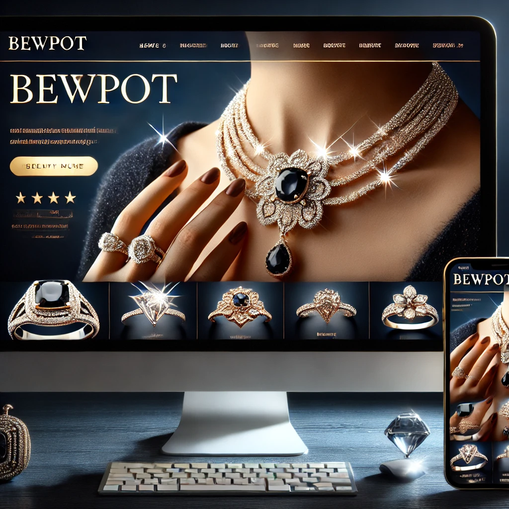

Perché un Sito Web Accattivante È Essenziale per Attività Creative
Perché è importante avere un sito web per attività creative
Mostrare il tuo portfolio al meglio
Un sito web è il luogo ideale per esporre i tuoi lavori, raccontare la tua visione e mettere in evidenza ciò che ti rende unico.
- Esempio per fotografi: Una galleria organizzata per temi (matrimoni, ritratti, paesaggi).
- Esempio per designer: Progetti suddivisi per settore (web design, branding, packaging).
- Esempio per artisti: Collezioni o mostre passate, con descrizioni che raccontano l'ispirazione dietro ogni opera.
Raggiungere un pubblico più ampio
Con un sito ben ottimizzato, puoi essere trovato da clienti locali e internazionali. Questo è particolarmente importante per attività creative che spesso lavorano su commissione.
Rafforzare la tua credibilità
Un sito professionale trasmette serietà e attenzione ai dettagli, elementi cruciali per guadagnare la fiducia dei potenziali clienti. Includere testimonianze e recensioni rafforza ulteriormente la tua immagine.
Convertire i visitatori in clienti
Un sito web non si limita a mostrare il tuo lavoro: guida i visitatori verso l'azione. Che sia richiedere un preventivo, prenotare una sessione o acquistare un’opera, ogni elemento del sito deve essere orientato alla conversione.
Caratteristiche essenziali di un sito web per attività creative
Un design che rispecchi il tuo stile
Il tuo sito web è una rappresentazione del tuo brand. Deve essere visivamente accattivante, originale e in linea con il tuo stile artistico.
- Per fotografi: Usa immagini in alta risoluzione e un layout minimalista che metta in evidenza i tuoi scatti.
- Per designer: Sperimenta con elementi grafici che mostrino la tua creatività.
- Per artisti: Scegli un design che richiami il tuo medium, come colori vivaci per un pittore o linee pulite per uno scultore.
Portfolio organizzato e navigabile
I visitatori devono poter sfogliare i tuoi lavori in modo semplice e intuitivo.
- Crea categorie o sezioni tematiche.
- Includi descrizioni brevi e significative per ogni progetto.
- Offri la possibilità di ingrandire le immagini per apprezzarne i dettagli.
Call-to-action efficaci
Guida i visitatori verso l’azione con messaggi chiari, come:
- "Contattami per un preventivo".
- "Prenota una sessione fotografica".
- "Acquista questa opera".
E-commerce integrato (opzionale)
Se vendi stampe, opere d’arte o pacchetti di design, includi una sezione e-commerce per semplificare l’acquisto.
Sezione "Chi sono" coinvolgente
Raccontare la tua storia personale è un modo potente per connetterti con il pubblico. Includi una breve biografia, il tuo percorso e la tua filosofia artistica. Usa una foto professionale per dare un volto umano al tuo brand.
Strumenti digitali per migliorare il tuo sito web
Gallerie dinamiche
Usa strumenti come Lightbox o carrelli di scorrimento per creare gallerie interattive che catturino l’attenzione.
Blog creativo
Condividi dietro le quinte, ispirazioni, tutorial o storie dietro i tuoi lavori. Questo non solo migliora il tuo posizionamento SEO, ma ti aiuta anche a costruire una connessione più profonda con il pubblico.
Integrazione con i social media
Collega il sito ai tuoi profili social per mostrare i lavori più recenti e mantenere i clienti aggiornati. Includi pulsanti di condivisione per amplificare la tua visibilità.
Modulo di contatto e prenotazione
Facilita la comunicazione con un modulo di contatto semplice e intuitivo. Per fotografi o designer, puoi integrare un sistema di prenotazione per sessioni o consulenze.
Esempio di un sito ideale per un fotografo
Immagina il sito di un fotografo professionista:
- La homepage accoglie i visitatori con una slideshow in alta definizione dei migliori scatti.
- Il portfolio è diviso in sezioni: matrimoni, ritratti, paesaggi.
- Una pagina "Chi sono" racconta la storia del fotografo e il suo stile unico.
- Un modulo di prenotazione permette ai clienti di fissare facilmente una sessione.
- Il blog include articoli su consigli fotografici e racconti dietro le quinte di alcuni progetti.
Come massimizzare l’impatto del sito
Ottimizza la velocità
Un sito lento allontana i visitatori. Usa immagini ottimizzate senza compromettere la qualità.
SEO per parole chiave creative
Usa termini rilevanti per essere trovato, come "fotografo matrimoni Milano" o "designer freelance packaging".
Aggiorna regolarmente
Aggiungi nuovi progetti e articoli per mantenere il sito fresco e interessante.
Conclusione
Per fotografi, artisti e designer, un sito web accattivante è il cuore della propria attività. È il luogo dove mostri la tua creatività, racconti la tua storia e trasformi i visitatori in clienti. Investire in un design professionale e funzionalità avanzate non solo migliora la tua visibilità, ma ti permette di distinguerti in un settore competitivo.